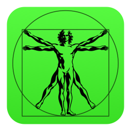
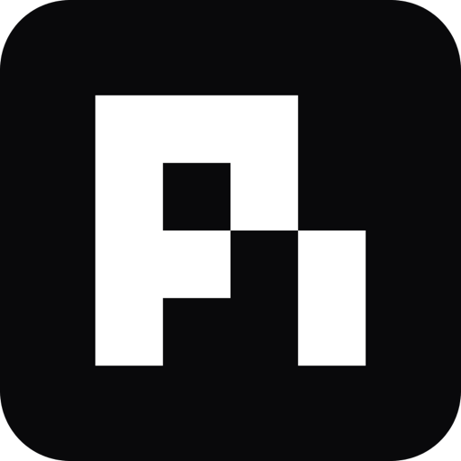
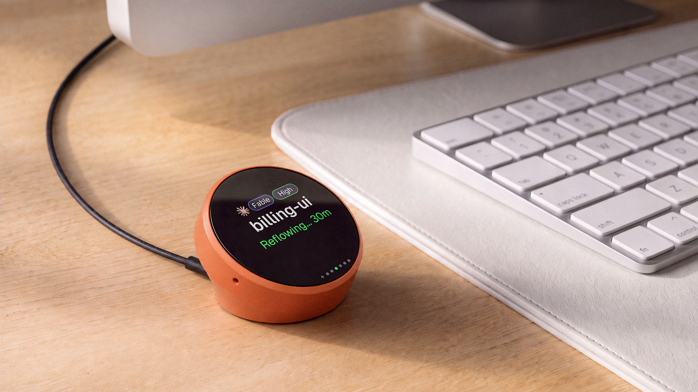

Onboarding redesign, for approval
Renders only; nothing is built yet. They replace the setup checklist, the New Harness box and the picker's badges you marked up. The copy, numbers and session names in them are examples.
1. First launch: a tour while Harness sets up
Seven slides, about 6 s each, in order of importance; the arrow or dots move them by hand. Setup now includes the agents: Harness's own Node and CLI (about 30 MB), and, for someone with no agents, OpenCode, Codex and Claude Code (about 290 MB). That took about 30–40 s on the VM's connection and would be nearer 2 minutes on 25 Mbit/s; on a slow connection the slides keep cycling. The bottom line is the only sign of the install: one sentence, a thin bar and the real time left. ▸ opens the log; a failure turns that line red, with Retry. Harness opens by itself, at the end of the slide on screen, once everything is downloaded: no button, nothing to click, and no install screen anywhere afterwards.
All your machines,
one window.

Harnessthis Mac

1 · Machines. The bottom line names no component: no tmux, no Node, no CLI.
All your agents,
side by side.
✓ middleware.ts
running tests…
✓ 3 files changed
done in 41 s
writing…
? needs your answer
2 · Agents.
⌘P finds
any harness.
3 · ⌘P. Results from three machines and three agents in one list.
⌘N starts
a new harness.
4 · ⌘N.
Sessions that
keep going.
› migrate the users table
✓ migration 0042 written
─── Mac restarted ───
Today 09:14 · resumed
› now backfill the emails
working…
5 · Persistent sessions.
Your agents
in your pocket.
✓ built
deploying…
6 · The Harness phone app. Could carry a QR code to get the app.
The Harness
device.

7 · The Harness device. Everything is downloaded here, so Harness opens by itself at the end of this slide.
All your agents,
side by side.
↓ Harness runtime 112 of 187 MB
↓ Agents: OpenCode ✓, Codex 61 of 137 MB, Claude Code 88 of 105 MB
Details open. Today's setup information, folded away; Copy diagnostics moves here.
Tagline: "All your machines. All your agents. One command center." sits under every slide. The longer "Now all in one command center, yours to run" reads well once but is long for a line repeated under every slide; it could be the last slide's copy instead. Underneath: the setup checklist, its first-task field and the "Next: start your first harness" footer leave the first screen. OpenCode downloads only when the Mac has no Claude Code, Codex or OpenCode at all (in #1067, including programs installed but never run). Help ▸ Welcome Tour can show the slides again.
2. Arrival: someone with no agents yet
No New Harness box, no starter game, no webview: one tab, three ordinary harness panes. OpenCode runs full height on the left, ready and focused, with a first task in its message box. Codex and Claude Code, downloaded during the setup tour, simply open on the right, each on its own sign-in screen. No special panes: these are the same panes ⌘N makes, and each has the usual × to close it.
▄ █▀▀█ █▀▀█ █▀▀█ █▀▀▄ █▀▀▀ █▀▀█ █▀▀█ █▀▀█ █ █ █ █ █▀▀▀ █ █ █ █ █ █ █ █▀▀▀ ▀▀▀▀ █▀▀▀ ▀▀▀▀ ▀▀▀▀ ▀▀▀▀ ▀▀▀▀ ▀▀▀▀ ▀▀▀▀
Sign in with ChatGPT to use Codex as part of your paid plan
or connect an API key for usage-based billing
> 1. Sign in with ChatGPT
2. Sign in with Device Code
3. Provide your own API key
Press enter to continue
Select login method:
❯ 1. Claude account with subscription
2. Anthropic Console account
3. 3rd-party platform
Enter to confirm
The first screen after the tour. All three are each agent's own screen: OpenCode's start screen with a first task typed in, Codex's and Claude Code's sign-in. Signing in is optional; × closes either pane.
Logic:
Downloads happen during the setup tour, not here: OpenCode from the first second (its installer needs only curl), and Codex and Claude Code with one npm command as soon as
setup's own Node is in place (both are npm packages, installed into ~/.local exactly as the panes would). The Details line in the tour lists them.
When Harness opens (as soon as Harness itself is ready), it creates three ordinary harnesses in one new project. OpenCode opens on its own default screen, focused, with a first
task typed into its own message box but not sent: Return sends it; to write something else, the person clears the line first (that is OpenCode's box, so Harness cannot pre-select the text).
Codex and Claude Code get no message, so they open on their own sign-in. Nothing in these three panes is drawn by Harness.
On a slow network the tour simply lasts longer: Harness opens only when all three agents are in place, so no pane ever shows an install.
If a sign-in can't be reached (for example Anthropic blocked on the network), the pane keeps the agent's own error as a shell instead of disappearing. Fixed today on #1052,
found by this flow on a VM. Only for someone with none of the three agents; anyone with Claude Code or Codex gets section 3, and OpenCode is not downloaded for them.
3. Arrival: someone who already uses Claude Code and Codex
Their most recent sessions that are not running anywhere open by themselves. Most recent means most recently active: the same order as ⌘P and the recent list on ⌘T, by each conversation's last activity. With both agents, tab 1 holds the most recently active Claude Code session and the most recently active Codex session side by side, so the first thing they see is two agents at once; tab 2 holds the next 3 most recently active, mixing both where they can. No strip or banner: the Claude Code and Codex limits stay in the footer, with a low one in amber.
› find why the build is slow
✓ 3 fixes, build 94 s → 31 s
Opened PR #418. Want me to also cache the lint step?
› make the sign-in page match the new brand
✓ SignIn.tsx, theme.ts updated
Want me to update the screenshots in the docs too?
Tab 1: one Claude Code and one Codex, each that agent's most recently active session. Typing in either picks the conversation up where it stopped.
› add per-key rate limits
✓ middleware.ts, limits.test.ts
All 214 tests pass. Shall I write the migration for the keys table?
› why do p99 latencies spike at 9am
✓ traced to the cache warm-up job
› write e2e tests for checkout
? stopped: needed a test card number
Tab 2: the next 3 sessions, both agents where possible, one large and two stacked. Tabs take Harness's usual names.
Logic: sessions are Claude Code and Codex conversations on this Mac from the last 30 days, most recently active first: the same lastActivityAt order ⌘P and the ⌘T recents use (the daemon's session_search, as the welcome page reads it today).
Only sessions that are not running: a conversation that is open right now in a terminal, an editor or another app is left alone, so bringing sessions into Harness never interrupts
the person's work. Those stay in ⌘P, where they can be taken over on purpose.
Both agents: tab 1 = the most recently active Claude Code session + the most recently active Codex session. Tab 2 = the next 3 most recently active, swapping in the other agent's next one if all 3 would be the same agent.
One agent: that agent's 2 most recently active in tab 1, the next 3 in tab 2. Fewer sessions: tab 1 fills first; tab 2 exists only if something is left.
Installed but no sessions yet: one empty pane on that agent, focused.
A pane shows its conversation at once, and its agent starts when the person types in it, so 5 panes do not start 5 agents. That "start on first keystroke" pane is the one new piece of plumbing here.
4. Choosing an agent: no badges
The picker lists agents and nothing else. Anything an agent needs is handled after you pick it, inside its own pane.

GrokThe picker: agents you use first, then the rest. No status words.
After picking one that isn't installed: its pane opens at once with one progress line, and the message is sent when it starts.
For one that needs a sign-in, the pane shows that agent's own sign-in screen.
What exists today: Store harnesses already get a progress panel like this while they install (Fetch, Set up, Check; dsh_install_panel.dart).
An agent install (Cursor, Copilot, Grok…) does not: its pane prints "harness: installing the engine — this pane becomes the agent when it finishes", the install command and the installer's raw output.
This brings the Store panel's treatment to agents. You said to build it, so it's in the build.
Checked: can it be built (2026-10-08)
Recent sessions and their order (screen 3): yes. The daemon's session_search, asked with a time and no words, returns recent Claude Code and Codex sessions with engine,
folder, title and last activity; the welcome page reads it today and sorts by lastActivityAt, as ⌘P does. Whether a conversation is open somewhere else is what the daemon already
checks before resuming one (it refuses a conversation open in another terminal).
Panes whose agent starts on the first keystroke (screen 3 only): new plumbing, the largest piece of this build. Screen 2 no longer needs it.
Friendly agent install (screen 4): built as #1069 and checked on a fresh VM.
Decided
Tour: 7 slides: machines, agents, ⌘P, ⌘N, persistent sessions, the Harness phone app, the Harness device; it cycles until every download is done. Tagline "All your machines. All your agents. One command center." Harness opens by itself once Harness and all agents are downloaded; no button.
New users: OpenCode, Codex and Claude Code all download during the setup tour. Then one tab: OpenCode full height on the left with a first task pre-filled; Codex and Claude Code stacked on the right on their own sign-in screens. Ordinary panes, closable. No game, no webview. Nothing is downloaded for someone who already has Claude Code or Codex.
Not in this build: any webview or preview. Help ▸ Welcome Tour is in the macOS menu bar's Help menu.
Existing users: only sessions not running anywhere. Tab 1 = most recently active Claude Code + most recently active Codex; tab 2 = the next 3 most recently active, both agents where possible (order = ⌘P / ⌘T recents, by last activity); one agent = its own recent sessions.
A pane's agent starts on the first keystroke. No welcome strip.
Pickers: no status badges; agent installs get a friendly progress screen instead of installer text (built: #1069, checked on a fresh VM).
Not changed: the footer and everything outside onboarding. (Footers in these renders now match the app: usage on the left after Models.)
Still open: nothing; waiting for your approval.